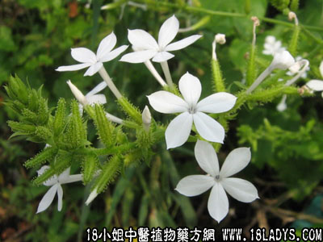

白花丹(中药材植物名:白花丹)(植物科目:蓝雪科)

别名：假茉莉、白雪花《广州植物志》。
植物名：白花丹。
生长环境：本品为扳援亚灌木，我国南部山野间常见，靠近石灰岩山比较多见。
分布：广布于全球热带地，广州为栽培种。
入药部分：根（内服用）、叶（外用）。
采集期：全年采根、叶。
自采地点：家种。
性味：根，性凉、味苦。叶，有毒性。
功能：消肿散瘀。
主治、用量和用法：（根）1、内伤咳血：用干根1至2两，清水煎服。或加猪瘦肉同煎服；2、气痛：用干根1至2两，清水煎服，或加猪瘦肉同煎服；3、眼起红筋：用干根5钱至1两，清水煎服。或加猪瘦肉同煎。
（叶）跌打瘀肿：用鲜叶加白饭和酒少许擂烂，外敷患处。此药刺激性强，不能久敷，否则发泡。约15～30分钟即除去。或用鲜叶1两，加鸡蛋一个（去黄），捣烂外敷患处。
验方：（治苦伤方）干白花丹根1两、牛大力1两、千斤拔1两、龙船花根1两、清水四碗，煎成一碗，温服。
（方解）白花丹通利血脉，龙船花根开郁行气，牛大力、千斤拔补肝肾。综合成方，有恢复精神与消除疲劳的作用，故能治疗由上述原因而致之苦伤疾患。
（方歌）白花丹治苦劳伤，血脉通流神复强，龙船花头牛大力，千斤一拔起昂扬。
禁忌：孕妇忌服。
参考资料：《广州市中医验方选集第一集》小梅卫生所介绍跌打瘀血肿痛，旧患积瘀疼痛验方：生白花丹叶1两，鸡蛋一个（去黄），先将白花丹叶擂烂，和鸡蛋白搅匀，煮成药饼，贴于患处，至觉痛时除去，有效。